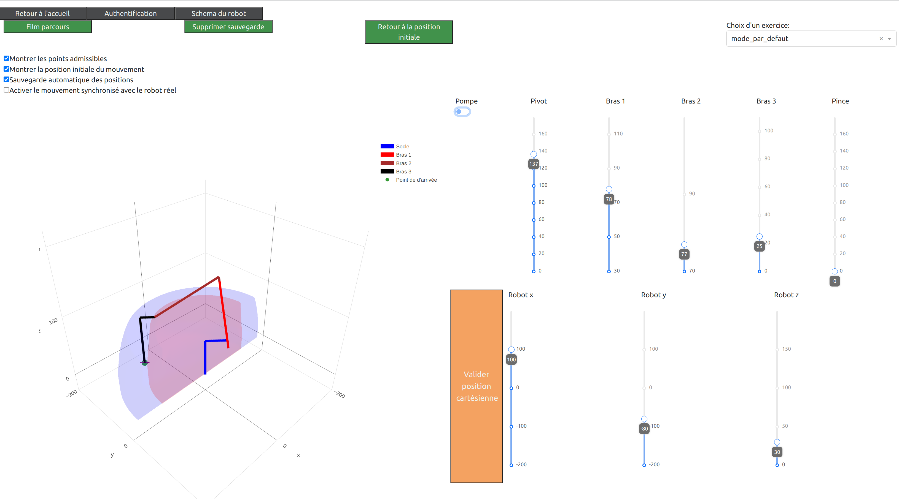

BRAS ROBOTISE COMMANDE A DISTANCE#
Documentation |
Outil interactif en ligne |
Construction du bras |
Maquette numérique |
|---|---|---|---|
|
|||
Description du projet#
bras_ljv est un package Python permettant de contrôler un bras robotisé à l’aide d’une interface virtuelle.

Composantes du projet#
Le projet mobilise des outils
- – De réseau informatique
Connexion en Point d’accès ou Ethernet
- – De programmation
Code python
- – De visualisation
Lien virtuel / Réel
- – D’algorithmique
Réaliser un ordonnancement de tâches
- – De construction et modélisation
Assemblage du robot réel, Virtuel avec Onshape
- – De connectique
Cablage du Raspberry pi, servos, interface PWM
Applications pédagogiques#
– Commander un bras réel à partir d’une interface virtuelle
{kind=link}
– Trouver un algorithme pour réaliser un déplacement d’objets

– Gérer les obstacles
Autres Applications#
- – Ajout d’une pince à la place de la ventouse
Augmentation de la zone de préhension (la pince n’étant plus forcément verticale ! )
- – Reconnaissance optique d’objets:
Déplacer, Trier, Ordonner –> déplacer, trier, ordonner des objets de façon automatique selon leur famille (forme, couleur, information …) A partir de photos de l’environnement du robot, ils’agirait d’exploiter des algorithmes dits de ‘Computer vision’ (Détection automatique d’objets, reconstruction d’espaces en 3D). Une fois la scène ainsi recontruite le robot peut effectuer les tâches demandées.
Exemple :
1- Localiser à partir de photos des jetons numérotés sur un plateau de jeu
2- Le robot empile automatiquement les jetons par numéros croissants
- – Ajout d’une base motorisée :
Reconnaissance d’objets dans un espace pour leur traitement